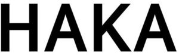

Trade Mark Journal No.2025/035 29 August 2025
WO0000001859150 (9,34,35)
Office of origin: Republic of Korea
Date of International Registration:25 March 2025
Date of designation in the UK:
25 March 2025

International priority date claimed: 11 February 2025
(Republic of Korea)
(4020250020694)
International priority date claimed: 11 February 2025
(Republic of Korea)
(4020250020695)
International priority date claimed: 11 February 2025
(Republic of Korea)
(4020250020696)
- Class 9
- Batteries for electronic cigarettes; chargers for electronic cigarettes; carrying cases for electronic cigarette chargers; USB chargers adapted for car cigarette lighter sockets, being used for charging electronic cigarettes; USB adapter for electronic cigarettes; charging case for electronic cigarettes; power units [batteries]; USB chargers for electronic devices that are used for heating tobacco; electrical cells and batteries; weight scales with built in body-fat analyzers not for medical purposes; diagnostic apparatus, not for medical purposes; body-fat scales not for medical purposes; weight scales not for medical purposes; pocket scales; electric plugs; phase modifiers; plug adaptors; rotary converters; portable electronic and electric testing apparatus; solar batteries; measuring instruments.
- Class 34
- Tobacco; electronic cigarettes; tobacco substitutes, namely, herbs for use as substitutes for traditional tobacco; cigarettes; cigars; flavorings, other than essential oils, for use in electronic cigarettes; electronic cigarette liquid [e-liquid] comprised of propylene glycol; liquid nicotine solutions for use in electronic cigarettes; nicotine mixture for use in electronic cigarettes; cigarette stick; cigarette stick for electronic cigarettes; tobacco substitutes, not for medical purpose; electronic devices for the inhalation of nicotine-containing aerosols; electronic cigarettes as substitutes for traditional cigarettes; smokers' articles, namely, cigarette tubes with filters; cigarette filters; cigarette cases and ashtrays for smokers; cases for electronic cigarettes; refill cartridges for electronic cigarettes, sold empty; cleaning and sanitizing swabs specially adapted for electronic cigarettes; cleaning tool for electronic cigarettes; hand-operated cleaning devices for electronic cigarettes; electric cleaning devices for electronic cigarettes; cleaning appliances for electronic cigarettes; protective cases for electronic smoking devices; neck chains specially adapted for use exclusively with electronic cigarette; atomizers for electronic cigarettes sold empty; electronic cigarettes and oral vaporizers for smokers; electronic device for heating cigarettes to release nicotine-containing aerosol; electronic devices and their parts for heating tobacco.
- Class 35
- Wholesale store services connected with the sale of tobacco; retail store services connected with the sale of tobacco; wholesale store services connected with the sale of electronic cigarettes; retail store services connected with the sale of electronic cigarettes; wholesale store services connected with the sale of batteries for electronic cigarettes; retail store services connected with the sale of batteries for electronic cigarettes; wholesale store services connected with the sale of chargers for electronic cigarettes; retail store services connected with the sale of chargers for electronic cigarettes; wholesale store services connected with the sale of smokers' articles [cigarette tubes with filters]; retail store services connected with the sale of smokers' articles [cigarette tubes with filters]; wholesale store services connected with the sale of neck straps for electronic cigarettes; retail store services connected with the sale of neck straps electronic cigarettes; wholesale store services connected with the sale of tobacco substitutes; retail store services connected with the sale of tobacco substitutes; wholesale store services connected with the sale of tobacco filters; retail store services connected with the sale of tobacco filters; wholesale store services connected with the sale of liquid nicotine solutions for use in electronic cigarettes; retail store services connected with the sale of liquid nicotine solutions for use in electronic cigarettes; wholesale store services connected with the sale of flavorings, other than essential oils, for tobacco; retail store services connected with the sale of flavorings, other than essential oils, for tobacco; wholesale store services connected with the sale of cleaning accessories for e-cigarettes; retail store services connected with the sale of cleaning accessories for e-cigarettes; wholesale store services connected with the sale of cleaning tools for e- cigarettes; retail store services connected with the sale of cleaning tools for e cigarettes; wholesale store services connected with the sale of vaporizers for e cigarettes and electronic smoking devices; retail store services connected with the sale of vaporizers for e-cigarettes and electronic smoking devices; wholesale store services connected with the sale of cigarette cases and ashtrays for smokers; retail store services connected with the sale of cigarette cases and ashtrays for smokers; wholesale store services connected with the sale of electronic devices and their parts for heating tobacco; retail store services connected with the sale of electronic devices and their parts for heating tobacco.
LEE Chung-eon
Representative: Appleyard Lees IP LLP, 15 Clare Road Halifax HX1 2HY UNITED KINGDOM